Public comment · Southeast Alaska Transportation Plan & 2027–2030 STIP · Route 7, Downtown Ketchikan
Give downtown Ketchikan room to walk.
Route 7 is a state highway, but downtown it is also Ketchikan's main sidewalk. Residents, kids, and more than 1.6 million cruise visitors a season share a narrow strip between the mountain and the channel. Narrower painted lanes, defined curbs, and wider walkways would slow traffic and make every crossing shorter. Two state transportation plans are open for comment right now.
- —Oct 19 · Southeast Alaska Transportation Plan20-year regional plan that guides future STIPs
- —Oct 29 · 2027–2030 STIPFour-year list of funded projects
Nine places along Route 7
Drag to see the difference
A signalized intersection on Tongass Avenue between a parking structure and the First Bank building. It is wide, with broad corners and long crossings on every leg.
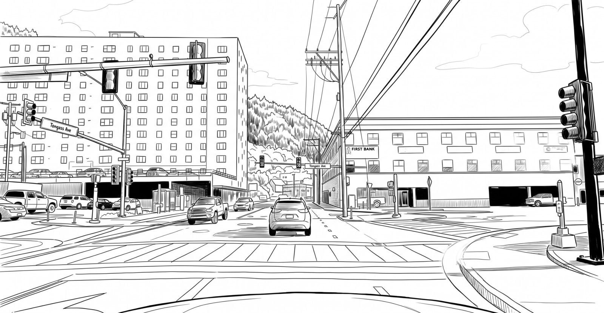
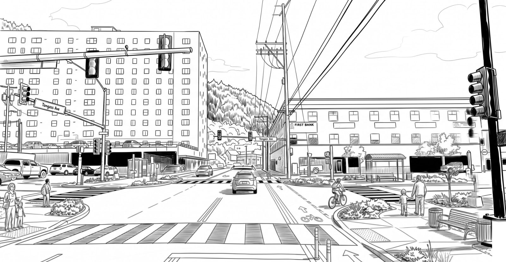
Today ProposedToday. The signal controls the cars, but the corners are so wide that turning drivers barely slow down. Faint crosswalk lines stretch across a broad field of pavement, and there is no place for a bus rider to wait.
Proposed. Planted curb extensions tighten every corner, so turns are slower and every crossing is shorter. High-visibility crosswalks, accessible ramps, a protected bike lane and a bus shelter turn a car junction into a hub for everyone.
A curve on Route 7 where an oversized paved apron runs along the front of a building. The extra asphalt does nothing for traffic and gives people nowhere to be.
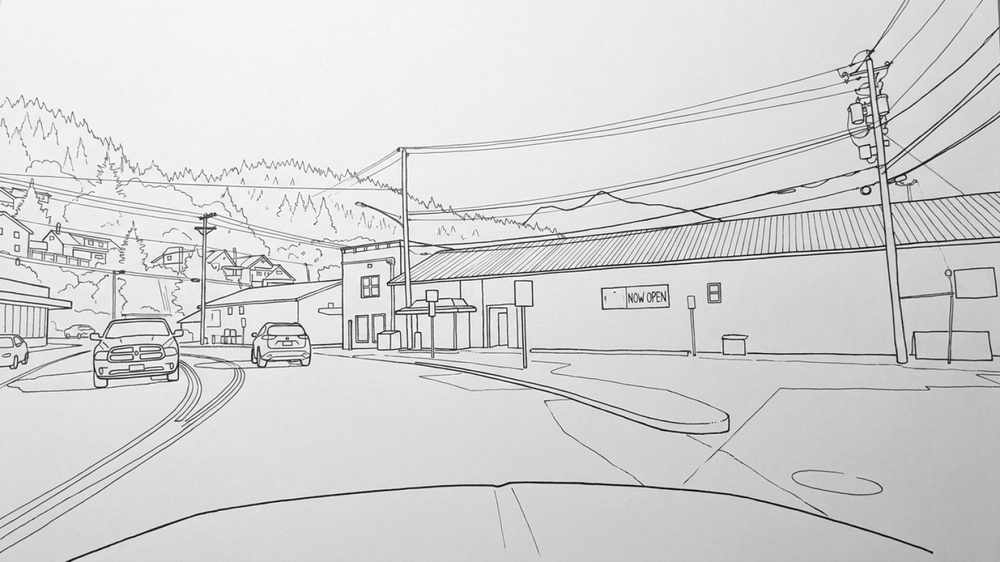
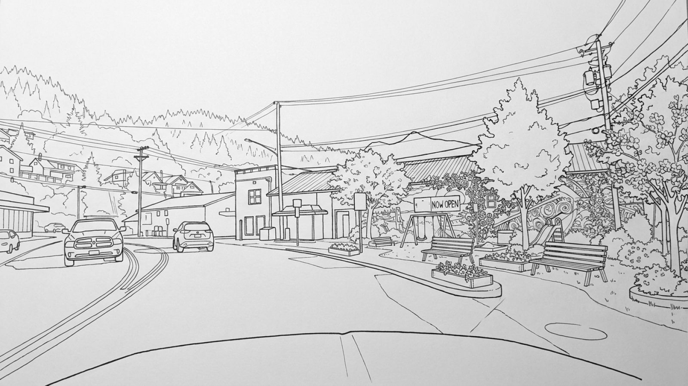
Today ProposedToday. A broad strip of pavement runs along a blank wall on the outside of the curve. Drivers can cut across it, and nobody walking has a reason to stop.
Proposed. A curb follows the travel lane, and the leftover asphalt becomes a small park with benches, planters, a play area and trees. The road keeps every lane it needs; the town gains a place to sit.
Tongass Avenue in front of The Landing, near the ferry terminal. Hotel guests, ferry passengers and neighbors cross here between The Landing and the lots across the road, with no crosswalk to use.
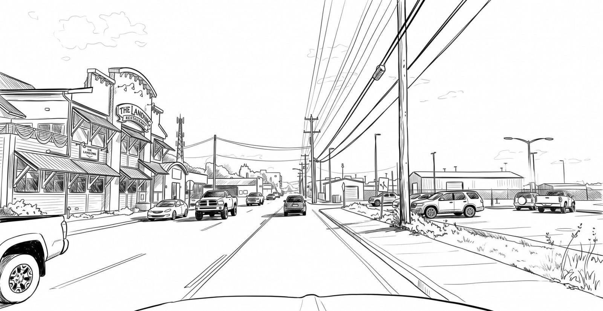
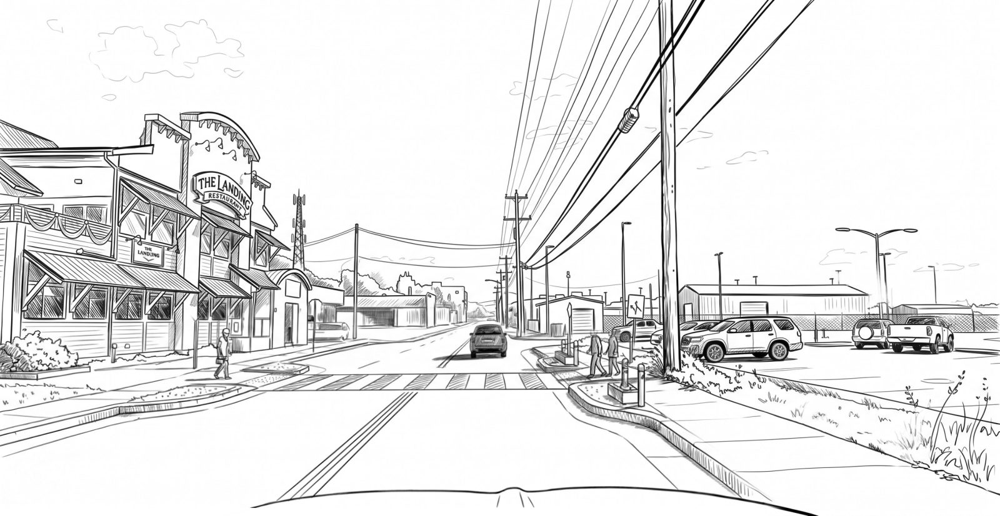
Today ProposedToday. There is no crosswalk. People cross the full width of the road wherever they can, stepping out between parked pickups that hide them from drivers until they are already in the lane.
Proposed. A marked crosswalk with curb extensions and bollards on both sides gives people one clear, short place to cross and keeps parked cars back from it. Walkers wait where drivers can see them, and spend less time in the road.
A long, straight stretch of Tongass Avenue with parking lots on both sides and a center turn lane. Wide, straight and with nowhere to cross, it invites highway speeds. FHWA reports that pedestrian refuge islands cut pedestrian crashes by 56%. [14]
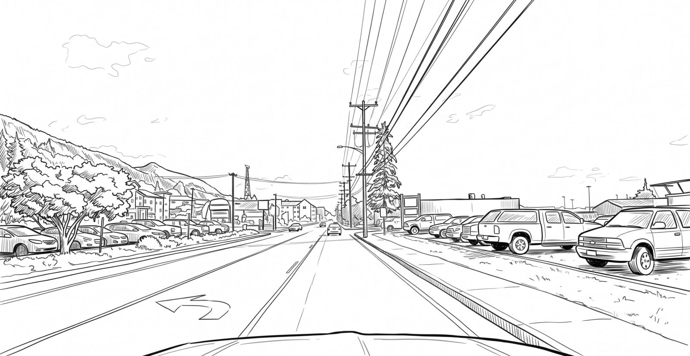
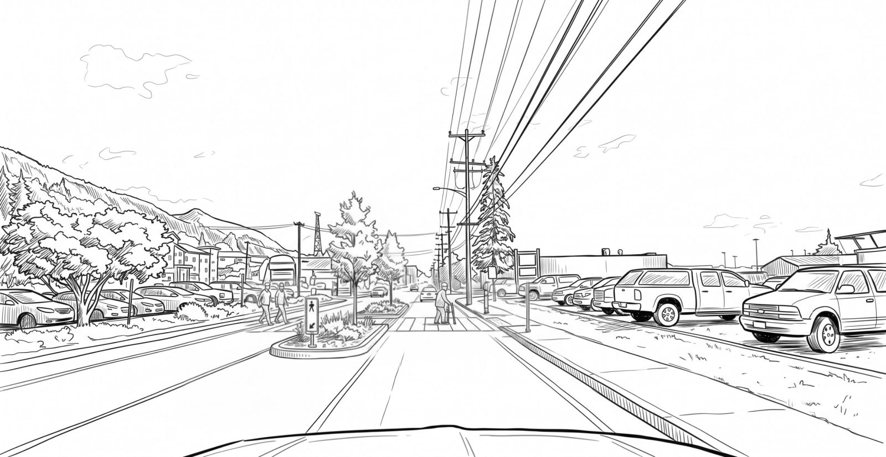
Today ProposedToday. Three lanes of open pavement and no crossing for a long way in either direction. Anyone walking between the lots on either side has to judge gaps in two directions of traffic at once.
Proposed. A raised, planted refuge island in the center lane lets people cross one direction of traffic at a time. The crosswalk, signs and trees tell drivers this is a place where people walk, and the island narrows the lanes enough to slow them.
Tongass Avenue approaching Schoenbar Road, where the highway runs between storefronts and a waterfront parking lot. DOT&PF's viaduct project already plans pedestrian improvements from the S-curve where Water Street meets Tongass Avenue to just north of Schoenbar Road. [11]
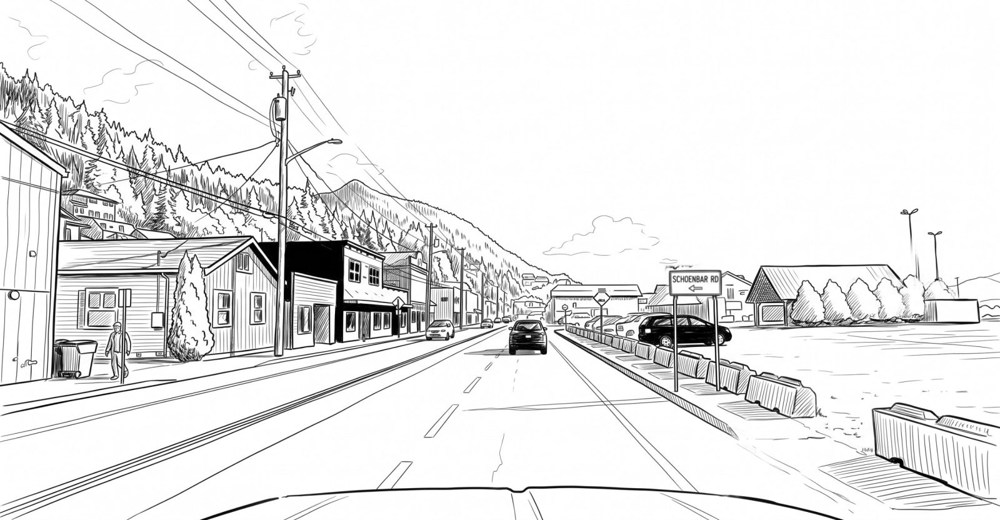
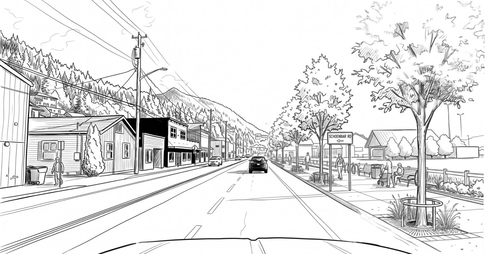
Today ProposedToday. On the water side, a line of jersey barriers is the only edge between traffic and a gravel lot. There is no sidewalk, so people walk in the lot or the shoulder.
Proposed. A curb and a row of street trees replace the barriers, and a waterfront promenade with benches and bike parking takes the space behind them. The trees narrow how the road looks, which slows drivers without a sign.
The junction of Route 7 and Schoenbar Road. DOT&PF's consultant reports that the Water Street and Schoenbar Road intersection is staffed by a single flagger during peak cruise season. [13]
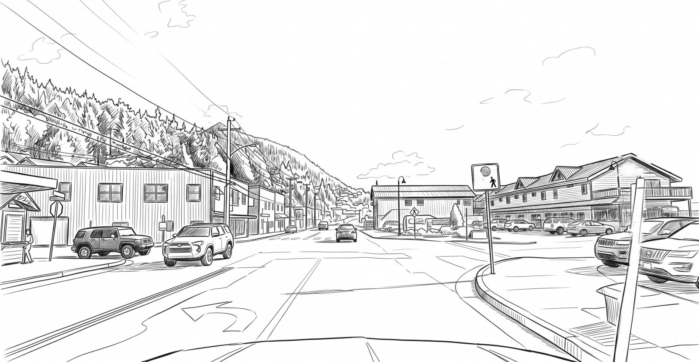
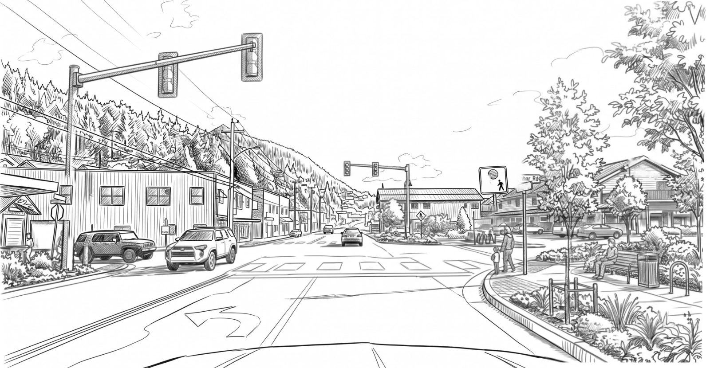
Today ProposedToday. Cars turn across an open apron with no crosswalk and no clear corner. A yellow pedestrian sign warns that people cross here, but nothing in the pavement shows them where.
Proposed. A signal with pedestrian heads, a high-visibility crosswalk, and a tight planted corner give walkers a defined, protected place to cross. A bench and bike racks make the corner a place to wait, not a gap to dart through.
The signalized intersection at Front and Dock Streets, between the historic storefronts and the cruise docks. On a ship day, crowds of visitors cross here between the waterfront and downtown.
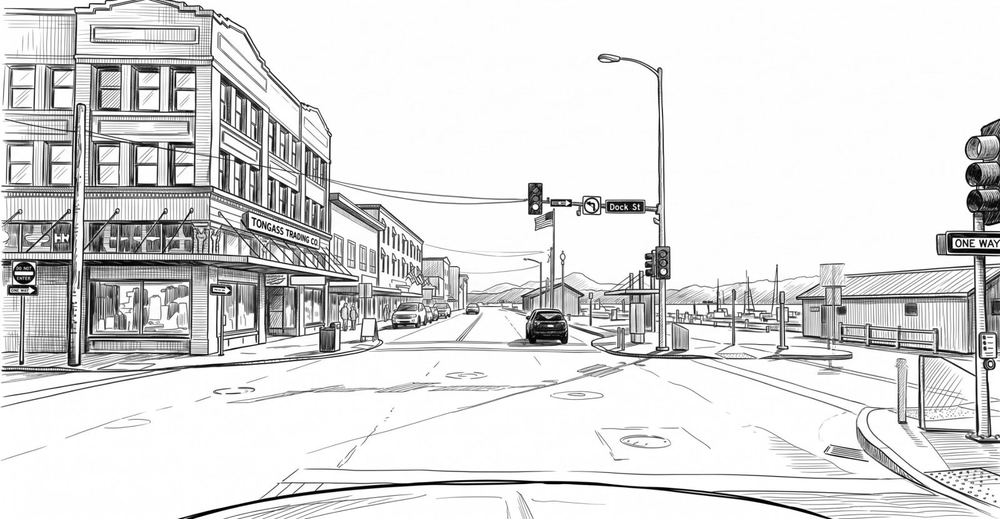
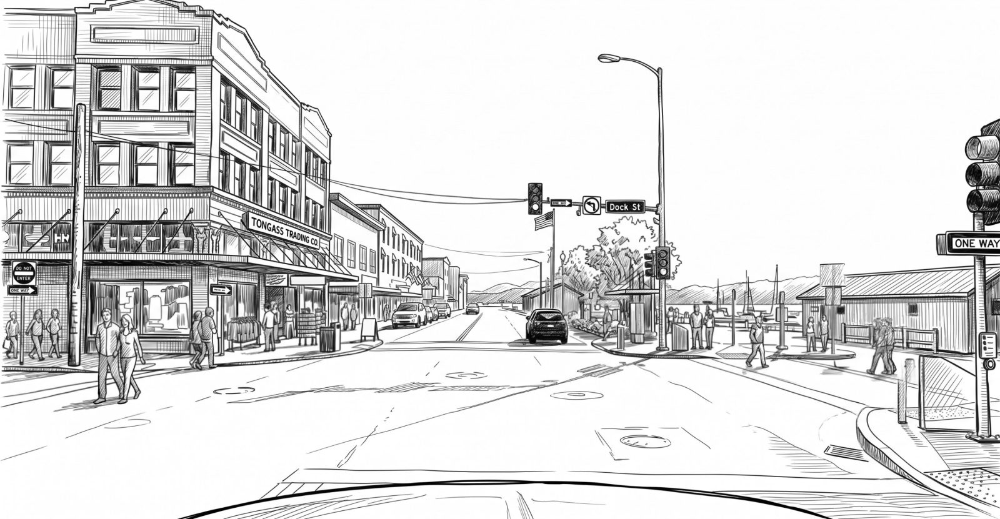
Today ProposedToday. A wide signalized intersection built around turning traffic. Broad corners and a large field of asphalt make for long crossings between the shops and the docks, with little shade, seating or edge.
Proposed. Street trees and planters frame the waterfront corner, and the sidewalks become places to stop, shop and wait. The intersection reads as a downtown square that people cross, not a highway junction they dash across.
Route 7 splits at the 1954 Water Street Tunnel: northbound traffic goes through the rock, southbound goes around the hill. Shops, a crosswalk and a busy sidewalk sit right at the portal.
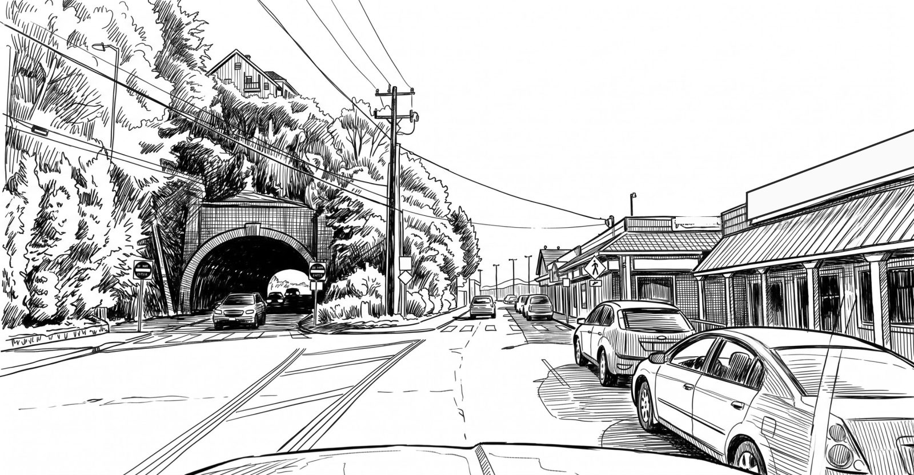
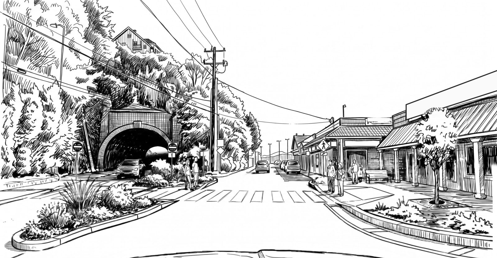
Today ProposedToday. The approach is a broad apron of asphalt where two roadways meet. Cars park nose-in against the shops, the crosswalk is faded, and nothing tells a driver leaving the tunnel where people will be standing.
Proposed. Planted curb islands define each lane and give walkers a place to wait. A high-visibility crosswalk, a curb extension with a street tree, and a wider sidewalk with seating turn the portal into a safe crossing point.
A downtown corner where the highway, a side street and a parking apron run together in front of storefronts.
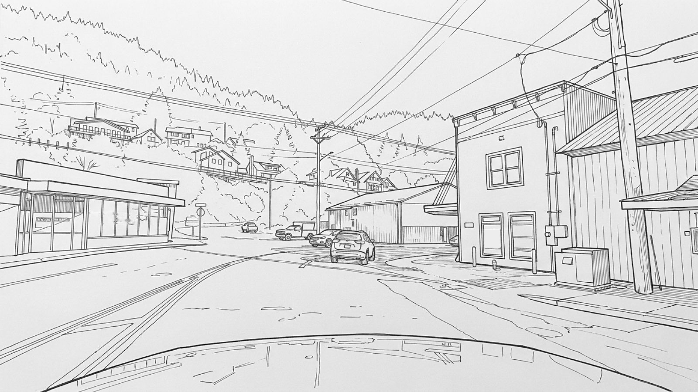
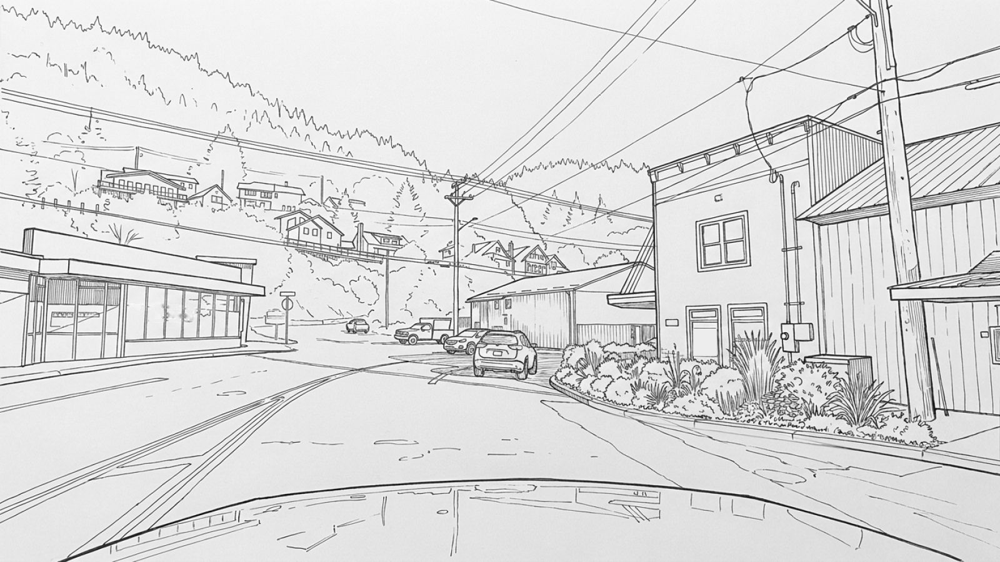
Today ProposedToday. Travel lane, parking apron and walkway run together as one wide field of asphalt. Drivers read open pavement as permission to go fast, and people on foot have no protected edge.
Proposed. A curb extension with plantings claims the corner back for people. It narrows the crossing, makes pedestrians visible before they step out, and tells drivers they have entered a town.
Turn your phone sideways for a bigger view.
Drag across the drawing to compare, or switch to side by side.
These are concept sketches to show the idea, not engineering designs.
Where these are · Route 7 from Bar Harbor to downtown Ketchikan
Swipe the map sideways to see the whole route.
Tap a numbered pin to open that stop.
All locations
What I'm asking DOT&PF to put in the STIP
Seven changes for Route 7
Most of these are paint, posts and curb work that can ride along with resurfacing or maintenance already planned for the corridor.
- 1
Restripe to 10-foot lanes
NACTO calls 10 feet generally appropriate for urban lanes, with one 11-foot lane per direction on truck or bus routes, and advises against anything wider than 11 feet because it invites speeding. [1]
- 2
Give the space to walkways
Put the reclaimed width into sidewalks. NACTO's downtown guidance is an 8–12 ft clear walking zone, separate from poles, benches and signs. [3]
- 3
Curb extensions and refuge islands
Bulb-outs shorten crossings and put waiting pedestrians in drivers' line of sight. On wide stretches with a center turn lane, a refuge island lets people cross one direction at a time; FHWA reports 56% fewer pedestrian crashes. Both can start as paint and posts. [2] [14]
- 4
Define every edge
Replace open asphalt aprons in front of buildings with curbs or delineators, so parking, driveways and walkways each have a clear place.
- 5
High-visibility crosswalks and light
FHWA rates high-visibility crosswalks, intersection lighting and advance yield markings as proven safety countermeasures. [5]
- 6
Leading pedestrian intervals
At signals, give walkers a few seconds' head start before cars get green. FHWA reports 13% fewer pedestrian–vehicle crashes at intersections. [6]
- 7
Name it in the plan
List a downtown Route 7 pedestrian safety project in the STIP, or write these elements into the scope of Route 7 work already underway, starting with the Tongass Avenue & Water Street Viaducts repairs (DOT&PF project SFHWY00196, construction as early as 2028). Allow interim quick-build materials before full reconstruction. [11]
Why narrower lanes and wider walks
The numbers behind it
Estimated increase in driver speed for each additional foot of lane width, cited in NACTO's lane-width guidance.
NACTO Urban Street Design Guide [1]A pedestrian's average risk of death rises from 10% at a 23 mph impact to 50% at 42 mph.
AAA Foundation, Tefft 2011 [4]Cruise passengers expected in Ketchikan in 2026, a record, on 58 ships. Most of them walk the downtown highway.
KRBD, March 2026 [7]Up to 40% fewer pedestrian injury crashes with high-visibility crosswalks. Intersection lighting: up to 42% fewer. Advance yield markings: up to 25% fewer.
FHWA Proven Safety Countermeasures [5]Fewer pedestrian crashes with a pedestrian refuge island. A raised median with a marked crosswalk: 46% fewer.
FHWA Proven Safety Countermeasures [14]Added crashes from lanes narrower than 12 ft on urban and suburban arterials, per research NACTO cites. Capacity concerns are also refuted.
NACTO Urban Street Design Guide [1]Try a lane width
Speed change uses the NACTO-cited estimate of 2.9 mph per foot, measured against a 10 ft lane. Crossing time assumes two lanes and the MUTCD walking speed of 3.5 ft per second.
Wider than NACTO advises. Lanes over 11 ft can cause unintended speeding.
Illustrative cross-section to show the idea of reallocating the same curb-to-curb width. These are not surveyed Route 7 dimensions; actual widths vary block by block.
Speed decides who survives
Average risk to a pedestrian struck by a car or light truck, by impact speed. Every mph that lane design takes off the top matters most in the 20–40 mph range downtown traffic actually moves at.
Data: AAA Foundation for Traffic Safety, Tefft (2011), standardized to U.S. crashes in 2007–2009. [4]
How local planning shapes a state highway
Ketchikan has already asked for this
Route 7 belongs to the state, so DOT&PF decides how it is striped and built. Local plans still matter: they tell the state what the community wants, and state law ties DOT&PF projects to local planning.
-
Open for comment until Oct 19
A 20-year regional plan is being written now
DOT&PF's draft Southeast Alaska Transportation Plan Update sets priorities for the next 20 years, and its projects are a look-ahead for future STIPs. Its first goal is "safe access to transportation options for all users," yet no objective names people walking. The draft also lists the Borough's 2009 comprehensive plan rather than the 2035 plan adopted this year. Both are easy to fix in the final plan. [15] [16]
"Communities with cruise ship ports see a dramatic increase of pedestrian use" during the cruise season.Draft SEATP, Appendix F: Surface Transportation System [17]
-
The adopted plan
The 2035 Comprehensive Plan calls for it
The Borough Assembly adopted the 2035 Comprehensive Plan on February 2, 2026. Its transportation chapter sets a goal to "build and maintain a safe, resilient, and accessible transportation network," and lists this partner-led action:
"Improve pedestrian crossings, sidewalks, and bicycle facilities in high-traffic areas, especially downtown and along Tongass Avenue."KGB 2035 Comprehensive Plan, Transportation, Strategy 5(b) [10]
The same chapter commits the Borough to work with DOT&PF on ADA-compliant upgrades in major projects, and to advocate for full funding of the Tongass Avenue and Water Street Viaducts.
-
State law
DOT&PF projects connect to local planning
Under AS 35.30, state agencies generally submit plans for public projects in a municipality to the local planning commission for review before construction. Road projects may be exempt when they follow earlier municipal transportation planning or a planning agreement with the municipality. Either way, a clear local plan for downtown streets gives that review real content. [12]
-
Work already moving
The viaduct repairs are the first chance
DOT&PF's Tongass Avenue & Water Street Viaducts project includes updated sidewalks, crosswalks and ramps, with construction as early as 2028. Local governments and tribes sit in on monthly project meetings. That is the moment to build in narrower lanes, wider walks and defined edges, rather than repaving the same layout. [11]
-
Next local step
A downtown sub-area plan
The comprehensive plan also calls for a Downtown Ketchikan sub-area plan. Street cross-sections for Route 7 written into that plan would give DOT&PF a local standard to design to on every future project, long after this STIP cycle. [10]
Your turn · deadlines October 19 and October 29, 2026
Two plans. Two deadlines.
DOT&PF is taking comments on two plans at once. The Southeast Alaska Transportation Plan sets regional priorities for the next 20 years, and future STIPs draw from it. The STIP is the four-year list of projects the state will actually fund. Agencies often count identical form letters as a single campaign, so build your comment below and add a sentence of your own. It takes about two minutes.
The STIP is the four-year list of projects DOT&PF plans to fund with federal money. Asking for a project here, or for changes to the scope of one already listed, is how street changes get paid for. Comments close October 29, 2026.
- Email the STIP team
- dot.stip@alaska.gov
- STIP Team, Alaska DOT&PF
550 W. Seventh Ave., Ste. 295
Anchorage, AK 99501 - Draft plan and official notice
- dot.alaska.gov/stip
Contact details are from DOT&PF's most recent STIP comment notice. Confirm them on the official draft STIP page before you send.
After the deadlines
What happens next
Comments are the first step. These are the next places the same requests can be made.
- Oct 19, 2026
SEATP comments close
The project team logs every comment, and DOT&PF then prepares the final Southeast Alaska Transportation Plan. Join the SEATP mailing list to hear when it is published.
- Oct 29, 2026
- Design now · build 2028
Tongass Ave & Water St Viaducts
Sidewalk, crosswalk and ramp work is being designed now, with construction as early as 2028. Sign up for updates on the project page or email the team at contact@ketchikanviaducts.com. [11]
- Coming up
Downtown Ketchikan sub-area plan
The Borough's 2035 Comprehensive Plan calls for a downtown sub-area plan. Its street standards would guide every future Route 7 project. Planning Commission meetings are public; watch the Borough website for agendas. [10]
Common questions
Route 7 and the STIP, explained
What is the Southeast Alaska Transportation Plan?
It is DOT&PF's 20-year plan for roads, ferries, airports and trails across Southeast Alaska, last written in 2004. The draft update identifies regional priorities that future STIPs draw from. Comments on the draft close October 19, 2026, by email to SEATP@dowl.com.
What is the Alaska STIP?
The Statewide Transportation Improvement Program is Alaska DOT&PF's four-year list of the road, bridge, ferry and other transportation projects the state plans to fund with federal money. The draft 2027–2030 STIP is open for public comment until October 29, 2026. Projects and project scopes are easier to shape while the plan is still a draft.
Who controls Route 7 in downtown Ketchikan?
The State of Alaska. Route 7 is a state highway, and through downtown it runs on Stedman Street, Mill Street, Front Street, Water Street and Tongass Avenue. Alaska DOT&PF decides how it is striped and rebuilt, which is why the comments go to the state.
Won't narrower lanes cause traffic jams?
NACTO's Urban Street Design Guide says research refutes capacity concerns about lanes narrower than 12 feet, and that such lanes on urban arterials don't increase crash frequency. It recommends 10-foot lanes for most city streets and 11 feet where buses or trucks need it.
How much would this cost?
Much of it is paint, flexible posts, signs and curb work. NACTO notes that curb extensions can start with low-cost materials before permanent construction. The changes can also be built into Route 7 work DOT&PF already has planned, such as the Tongass Avenue & Water Street Viaducts repairs.
Does this help visitors or residents?
Both. Ketchikan expects more than 1.6 million cruise passengers in 2026, and most of them walk downtown. The same crossings carry residents to work, school, the hospital and the ferry all year.
How do I comment, and by when?
Send two short comments. The Southeast Alaska Transportation Plan closes first: email SEATP@dowl.com by October 19, 2026. For the STIP, email dot.stip@alaska.gov or mail the STIP Team, Alaska DOT&PF, 550 W. Seventh Ave., Ste. 295, Anchorage, AK 99501, by October 29, 2026. The sample comments on this page are a starting point.
Is this a Borough or Planning Commission position?
No. This site is one resident's comment. Its author serves on the Ketchikan Gateway Borough Planning Commission, but the Commission takes positions only by a vote at a public meeting.
Does local policy support these changes?
Yes. The Borough's 2035 Comprehensive Plan, adopted February 2, 2026, calls for improving pedestrian crossings, sidewalks and bicycle facilities in high-traffic areas, especially downtown and along Tongass Avenue.
Sources
Read the research
- NACTO, Urban Street Design Guide: Lane Width
- NACTO, Urban Street Design Guide: Curb Extensions
- NACTO, Urban Street Design Guide: Sidewalk Zones
- AAA Foundation for Traffic Safety, Impact Speed and a Pedestrian's Risk of Severe Injury or Death (Tefft, 2011)
- FHWA Proven Safety Countermeasures: Crosswalk Visibility Enhancements
- FHWA Proven Safety Countermeasures: Leading Pedestrian Interval
- KRBD, Ketchikan expected to see record number of cruise ship passengers (March 2026)
- FHWA Proven Safety Countermeasures: Road Diets (Roadway Configuration)
- Planetizen / Alaska Beacon, Alaska takes public comment on new long-term plan (Oct 2026)
- Ketchikan Gateway Borough, 2035 Comprehensive Plan (adopted Feb 2, 2026)
- Alaska DOT&PF, Ketchikan Tongass Avenue & Water Street Viaducts (SFHWY00196)
- Alaska DOT&PF, Planning Power for Alaskan Communities (AS 29.40, AS 35.30 summary)
- Parametrix, Tongass Avenue and Water Street Corridor (project profile for Alaska DOT&PF)
- FHWA Proven Safety Countermeasures: Medians and Pedestrian Refuge Islands
- Alaska DOT&PF, Southeast Alaska Transportation Plan Update (draft, comments close Oct 19, 2026)
- Draft SEATP Appendix C: Vision, Goals, and Objectives
- Draft SEATP Appendix F: Surface Transportation System Technical Memorandum
The draft SEATP Update is DOT&PF's 20-year plan for roads, ferries, airports and trails in Southeast. Its goals promise "safe access to transportation options for all users," but none of its objectives names people walking. Comments close October 19, 2026.
Contact details are from the SEATP project website. DOWL is DOT&PF's consultant running the plan update.